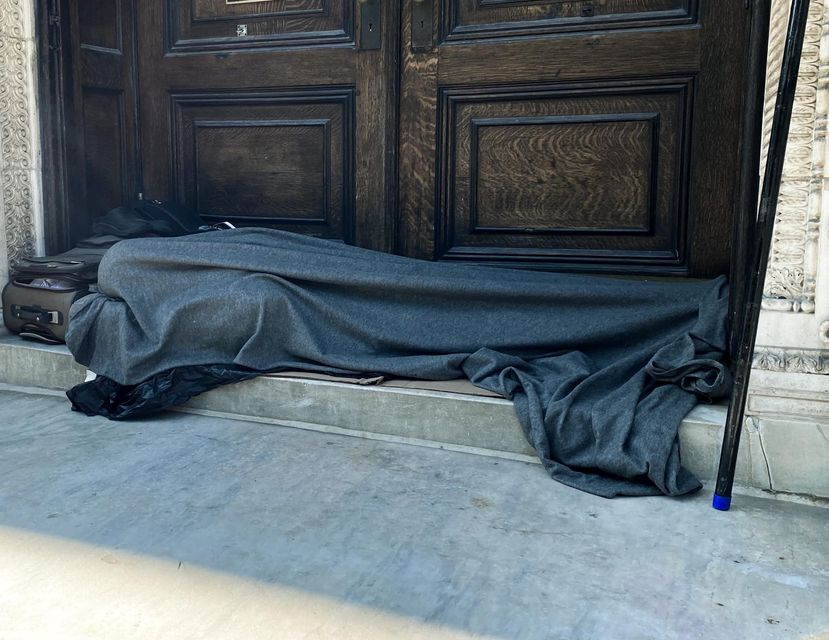

Mobile uploads
I’m in New York City this week. I haven’t been here since before Covid.
Homelessness and violent mental illness is FAR more prevalent than it was before Covid.
These people need to be treated like what they are: traumatized refugees. We need emergency refugees camps created for them immediately. We need doctors, psychiatrists and relocation specialists. NOW!
New York is a war zone decimated by extreme poverty.